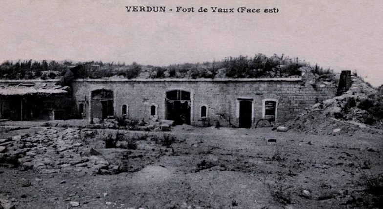
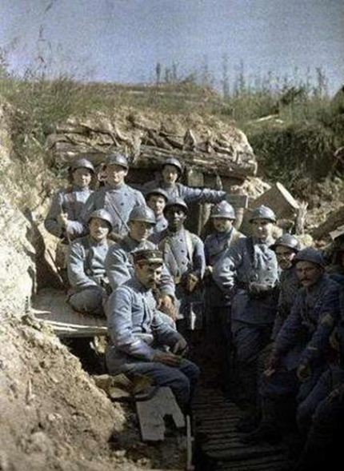
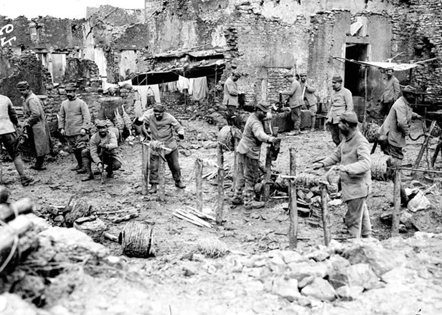
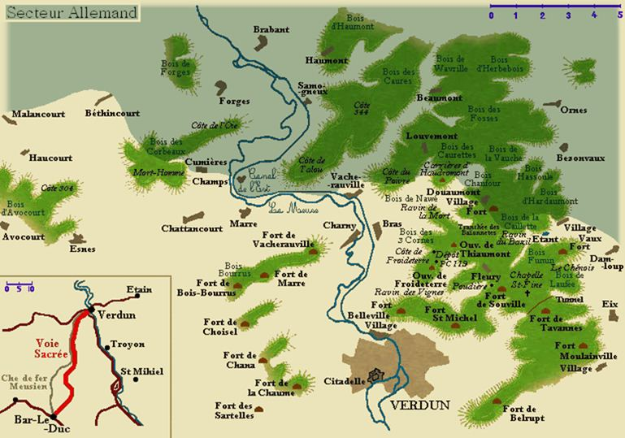
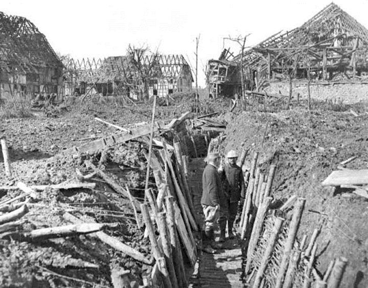
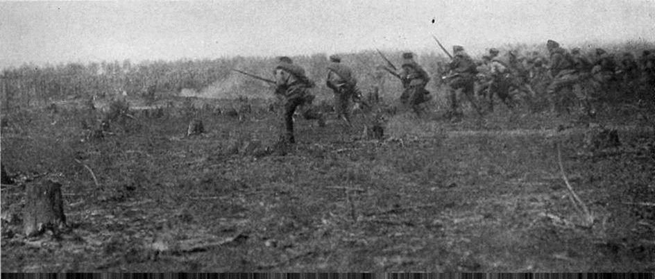
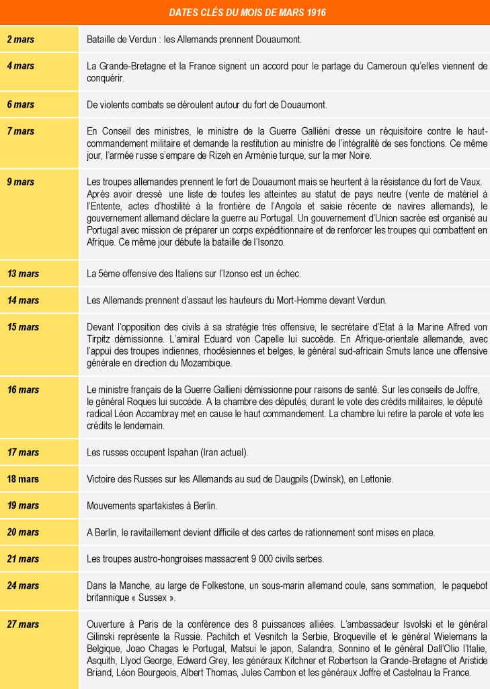

Le mois de mars 1916 débute en ce 578ème jour de guerre et les combats engagés dans le secteur de Verdun, quelques jours plus tôt, continuent de s’intensifier…
Du mercredi 1er mars au dimanche 5 mars 1916
Sur les fronts Belge et Français
Sur les fronts Belge et Français
Entre Ypres et Arras, de violents combats se livrent : les armées en présence sont entrées en action. Les rapports venus de Belgique accordent que les préparatifs allemands ont été faits sur une telle échelle qu'on peut prévoir des batailles longues et rudes.
En Champagne, les attaques qu'on pouvait craindre se bornent à des opérations purement locales qui ne paraissent pas devoir s'étendre.
L'attaque sur Verdun, d'une violence inouïe, est enrayée; près de 120 000 Allemands, le tiers des effectifs engagés par le kronprinz, sont hors de combat : des milliers et des milliers de cadavres jonchent tout le secteur. Après une accalmie de quelques jours, durant laquelle l'ennemi tente de combler ses vides, les attaques recommencent, à la fin de la semaine, aussi terribles et aussi furieuses. Des bataillons entiers sont fauchés par l’artillerie, principalement autour du fort et du village de Douaumont en ruines, pris et repris plusieurs fois par les troupes adverses dans des assauts acharnés. La boucle de la Meuse, au nord de Verdun, battue à la fois par les deux artilleries, est intenable pour chacun des adversaires. En résumé, l'armée allemande se trouve tenue en échec à 8 ou 10 kilomètres au nord de Verdun tandis qu’à l’Est, elle patauge dans la plaine de Woëvre, en contrebas des côtes de Meuse, à 10 kilomètres de la place.
Le président de la République visite Verdun et la région fortifiée; il décore, près de Revigny, la station d'autos-canons qui abattit un zeppelin et reçu par le général Pétain, il prie les commandants de transmettre aux troupes ses félicitations chaleureuses. La Provence, grand paquebot français transformé en croiseur auxiliaire, est torpillé par un sous-marin allemand, dans la Méditerranée : un millier de soldats français périt.
Sur le front russe
Sur le front occidental, accalmie, sauf dans la région au nord de Czartorysk, où les Allemands tentent une offensive facilement dispersée par l'artillerie russe.
Sur le front du Caucase, les Russes continuent à presser l'ennemi; dans la région de Bitlis, la lutte se poursuit dans des conditions de difficultés exceptionnelles : les chemins sont défoncés, le froid est rigoureux et la neige épaisse.
Les Russes s'emparent de vive force de la ville de Bitlis : ils prennent 6 canons, et parmi les Turcs faits prisonniers se trouvent 17 officiers, dont un colonel. La prise de cette ville, après celle d'Erzeroum, enfonce pour la seconde fois le front turc.
La population civile turque de Trébizonde évacue cette ville que les Russes serrent de près.
Du lundi 6 mars au dimanche 12 mars 1916
Sur les fronts Belge et Français
Activité réciproque d'artillerie dans la région d'Ypres, sur le front défendu par les Anglais.
Les attaques allemandes, toujours violentes, échouent contre nos lignes au nord de Verdun. L'effort ennemi porte principalement sur les ailes alliées, du côté de Béthincourt et du bois des Corbeaux à l'ouest, puis sur le plateau qui domine Vaux, devant Damloup, à l'est : partout il est brisé, après avoir entraîné des pertes énormes auxquelles il est impossible que les Allemands puissent suffire longtemps. L'état-major allemand n'a réussi ainsi qu'à faire porter légèrement en arrière, quelques avancées en saillant des lignes françaises.
En Alsace, les batteries françaises bouleversent les tranchées allemandes à l'est de Thann. L’aviation française se montre particulièrement active : de nombreux combats sont livrés par les appareils à la cocarde tricolore, la plupart dans les lignes ennemies.
Dix avions allemands, dont un Fokker, sont ainsi détruits.

Front le 10 mars 1916
Seppois-le-Haut : boyau d'accès aux 1ères tranchées, 14 mars 1916
Sur le front russe
Sur le front austro-allemand, la défensive se change peu à peu en offensive, de la part des Russes, dans la région de Riga et de Courlande.
Les Allemands annoncent que leur flotte de Kiel va attaquer Riga : rien ne vient confirmer cette menace.
Dans la région de Dvinsk, la situation reste stationnaire; de même dans la région de la Strypa supérieur et en Galicie. La neige tombe presque partout en abondance et ne permet pas d'action d'ensemble.
Dans la région du Caucase, l'armée russe continue sa progression : elle est divisée en deux colonnes dont l'une, partant du lac Van après la prise de Bitlis, va chercher à opérer sa jonction avec l'expédition anglaise sur Bagdad; l'autre, qui a pénétré en Arménie avec une rapidité merveilleuse, s'avance sur Trébizonde que les Turcs continuent à évacuer. Déjà l'armée russe, appuyée sur sa flotte, s'est emparée de Mapawre et du port important de Rizeh, à 40 kilomètres de Trébizonde.
Du lundi 13 mars au dimanche 19 mars 1916
Sur les fronts Belge et Français
Une grande activité règne sur la ligne Dixmude-Gand.
Les Anglais bombardent avec succès les tranchées allemandes, près de la voie ferrée d'Ypres à Roulers.
A l'ouest de Lens, l'artillerie allemande tonne jour et nuit.
Mais l'attention de l'Europe, du monde entier, est concentrée sur Verdun, où la troisième phase de la bataille commence. Les lignes françaises sont formées par une première position : Béthincourt-Mort-Homme-Gumières et par une deuxième position : Malancourt-Esnes-Bois-Bourrus-Fort de Marre. Les Allemands, ayant attaqué toute la longueur de la première ligne française, ont pénétré dans les tranchées à la gauche qui se trouve en saillant.
Deux membres de la commission de l'armée à la Chambre répètent les paroles qu'ils ont recueillies de la bouche du général Pétain, qui défend Verdun : «J'ai maintenant l'esprit libre, j'ai la certitude du succès final. » L'ennemi paraît moins s'acharner sur Vaux, et porter son effort vers le secteur du sud de Verdun.
L’aviation de combat française, malgré la brume et les nuages bas, effectue dans la région de Verdun de nombreux vols de chasse et bombarde les gares de Conflans et de Metz, et l'aérodrome allemand de Dieuze.
4 hydravions allemands survolent Douvres : l'un d'eux est abattu.
Pour raisons de santé, le général Galliéni donne sa démission de ministre de la Guerre; il est remplacé par le général Roques.
Le torpilleur d'escadre français le Renaudin est coulé, dans l'Adriatique, par un sous-marin ennemi.
Sur le front russe
Accalmie sur les fronts russes, sauf en Arménie où, en poursuivant les Turcs dans la direction d'Erzindjan les troupes russes occupent, après un combat, le village de Kotur, au sud-ouest de la ville de Mamahatun.
Du lundi 20 mars au dimanche 26 mars 1916
Sur les fronts Belge et Français
En Belgique, l’artillerie alliée exécute des tirs sur les tranchées et boyaux de la seconde ligne ennemie, dans la région de Steenstraete.
L'effort allemand continue autour de Verdun, que les Allemands appellent un « nouveau Sébastopol ». Malgré la violence du bombardement et les attaques en masses compactes de l'infanterie allemande, les troupes françaises ne perdent que la corne sud du bois d'Avocourt, située à 16 kilomètres de Verdun.
Le général Cadorna, accompagné du générallissime Joffre, visite une partie du front français.
Le prince Alexandre de Serbie, accompagné de M. Poincaré, président de la République, est allé saluer le général Joffre, au grand quartier général, puis a visité une partie du secteur de Verdun.
La campagne sous-marine allemande continue : de nombreux torpillages sont relevés par l'amirauté anglaise. Par suite du blocus sous-marin de l'Angleterre, les navires neutres sont exposés à être coulés en entrant dans les eaux britanniques.
Sur le front russe
Sur le front de Riga, duel d'artillerie et de mousqueterie.
La percée des lignes allemandes au sud de Jacobstadt permet aux Russes de continuer une avance lente, mais méthodique, tout en paralysant les contre-attaques de diversion de l'adversaire.
Les troupes russes du rayon fortifié de Dvinsk se mettent également en mouvement.
En Galicie et sur le front du Caucase, la progression russe continue lentement.

Des soldats russes à l’assaut
Du lundi 27 mars au vendredi 31 mars 1916
Sur les fronts Belge et Français
L'armée anglaise étend son front dans la région d'Arras, de manière à relever plusieurs divisions françaises : les Anglais défendent alors 130 kilomètres de front.
Au nord de l'Aisne, les communiqués signalent une assez grande activité des deux artilleries, dans les régions de Moulin-sous-Touvent et de Fontenoy.
En Argonne, l’artillerie alliée exécute des tirs de destruction sur les routes et voies ferrées ennemies.
La bataille de Verdun qui, pendant quelques jours, s'était calmée, reprend presque l'ampleur du début; l'ennemi passe rapidement d'un point à un autre : tantôt il attaque furieusement l’aile gauche alliée à Malancourt, tantôt le centre au Mort-Homme, tantôt l’aile droite à Vaux; quant aux résultats: à l'ouest, c'est la prise de Malancourt; à l'est, la prise de Vaux; mais le Mort-Homme et le fort de Vaux demeurent aux mains des Français. Néanmoins, les communiqués de l'état-major français disent que Malancourt et Vaux sont des amas de ruines dont la possession n'a plus d'importance.
Deux nouveaux raids de zeppelins sont effectués sur les comtés de l'est de l'Angleterre : organisés en deux escadrilles, ces dirigeables ont jeté 76 bombes et tué ou blessé 100 personnes environ. L'un des zeppelins, atteint par un canon anglais, est descendu au large de l'embouchure de la Tamise : l'appareil a coulé.
La commission du Reichstag, en Allemagne, souscrit à l'aggravation de la guerre sous-marine: mais les puissances neutres se plaignent des violations du droit international : la Norvège conseille à ces puissances une action commune, la Hollande convoque ses deux Chambres et supprime les permissions de ses militaires.
Les représentants des huit gouvernements de l'Entente, réunis à Paris les 27 et 28 mars 1916, ont affirmé l'entière communauté de vues et la solidarité des Alliés et confirmé toutes les mesures prises pour réaliser l'unité d'action sur l'unité de front : les gouvernements alliés décident, en outre, de coordonner l'action économique à exercer pour empêcher les ravitaillements de l'ennemi. La presse du monde entier commente l'important texte désormais historique des résolutions des puissances de l'Entente.
Le général Cadorna adresse, de Modane, une dépêche au générallissime Joffre dans laquelle il exprime sa « pleine certitude de la victoire finale ».
Sur le front russe
Le dégel arrête les opérations, les conditions du terrain devenant très difficiles; mais dans trois secteurs, les troupes russes font des progrès considérables.
Dans le secteur de Jacobstadt, les Russes consolident leur avance.
En Galicie, ils traversent deux nouvelles tranchées ennemies et repoussent toutes les contre-attaques.
Partager cette page